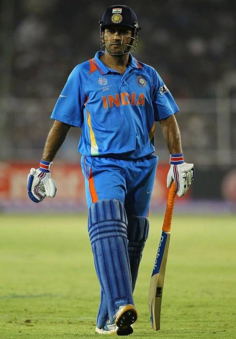

Mahendra singh dhoni

Mahendra Singh Dhoni (MS Dhoni) is a legendary Indian cricketer, former captain, prolific wicket-keeper, and one of the most successful leaders in cricket history, famous for his calm demeanor and ability to finish matches, leading India to major ICC titles like the 2007 T20 World Cup, 2011 Cricket World Cup, and 2013 Champions Trophy. He's a right-handed batsman known for powerful hitting and is considered one of the greatest wicket-keeper batsmen and captains ever,for impressing with his calm demeanor, powerful hitting, and record-breaking stumpings, and was honored with India's Padma Bhushan
Facts about MSD
- From Football to Cricket, Dhoni played football as a goalkeeper, but his coach suggested wicketkeeping, leading to his cricketing journey.
- Railway Ticket Examiner, Before becoming a star, he worked as a Travelling Ticket Examiner (TTE) for Indian Railways from 2001-2003.
- Indian Army Rank,Dhoni holds the honorary rank of Lieutenant Colonel in the Territorial Army's Parachute Regiment, presented to him by the Indian Army in 2011.
- No. 7 because he was born on the 7th of July (7/7), making it a deeply personal choice, he explained, as well as 8-1 =7 (referencing his birth year 1981).
- Finisher's Innings,Famous for his unbeaten 91 in the 2011 World Cup final.
- The only captain to win the T20 World Cup (2007), ODI World Cup (2011), and Champions Trophy (2013).
- #1 Test Ranking: Led India to the top spot in ICC Test rankings in 2009.
- Motorcycle Enthusiast: A passionate collector of bikes, owning vintage and modern models.